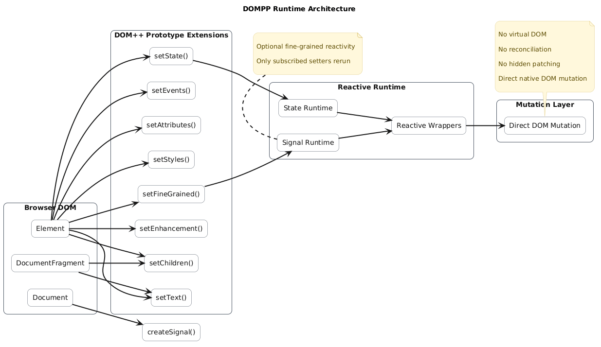

A browser-native mutation runtime exploring deterministic DOM updates, optional reactivity, fine-grained signals, and progressive enhancement without virtual DOM reconciliation.
DOMPP extends native DOM prototypes
with small chainable setters while
preserving direct access to browser APIs.
No virtual DOM.
No hidden reconciliation.
No compiler required.
DOMPP mutates native DOM nodes directly without virtual DOM diffing or reconciliation layers.
Choose between local stateful runtime or optional fine-grained signals.
Enhance existing server-rendered HTML without subtree recreation or hydration engines.
DOMPP intentionally avoids several common framework abstractions.
DOMPP mutates native DOM nodes directly without tree diffing or reconciliation passes.
DOMPP does not require JSX, template compilation, or build-time transforms.
State remains attached directly to DOM elements and follows explicit mutation flow.
DOMPP is designed around explicit mutation flow and native DOM mental models.

DOMPP examples also document runtime behavior and mutation semantics.
Explore how local state reruns reactive setters and propagates mutation through the DOM.
Understand direct signal subscriptions and isolated setter-level reactivity.
Learn how DOMPP handles node reuse, child replacement, and runtime ownership.
DOMPP examples are designed as
runtime learning blocks.
Each example progressively explores:
deterministic mutation,
reactive ownership,
DOM identity preservation,
fine-grained updates,
and browser-native runtime semantics.
DOMPP explores the idea that
browser-native mutation APIs
could evolve into a richer runtime layer
capable of supporting higher-level
frameworks and compilers.
Rather than replacing the DOM,
DOMPP investigates how the DOM itself
might become the runtime infrastructure.